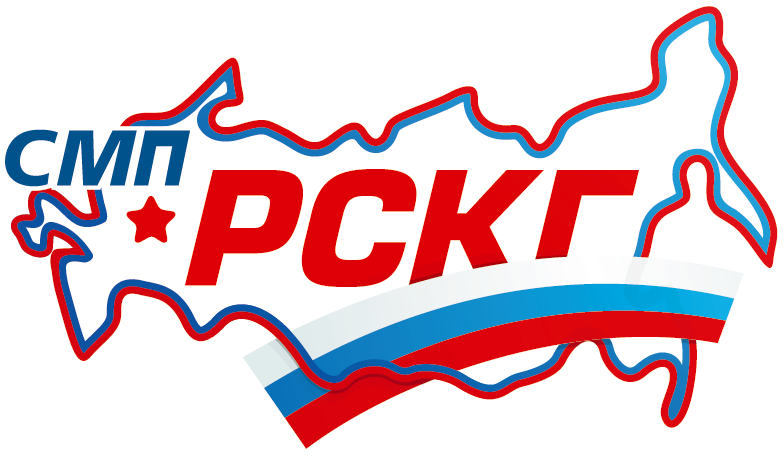

Hobbies
- Car Racing
- Simracing
- Table Top RPGs
- Scalecraft

Achievments
- 4th place in the Russian Cup of circuit racing in the S1600 Junior class
- 1st place in 2022 24h of Saint-Petersburg White Nights Cup Go-Karting endurance race
- 1st place among tier 1 team at 2023 Crimson Code hackathon at WSU